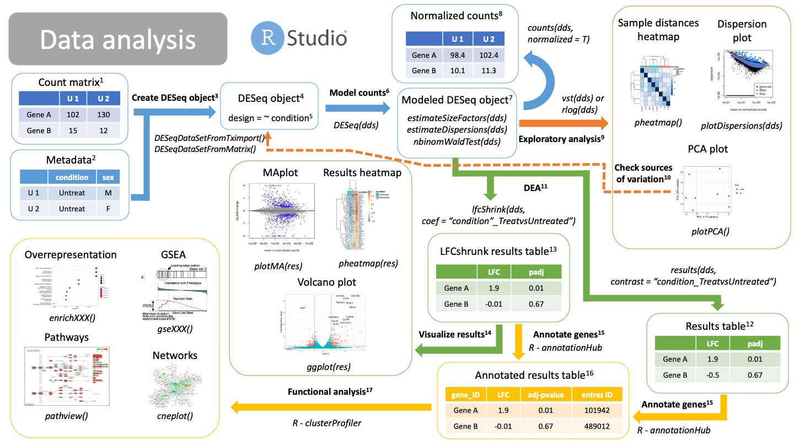

Workshop summary
Below you will find a summary of all the steps used in the workshop, as well as annotations for each of the steps.
RNAseq experiment
- The goal of a bulk RNAseq analysis is to compare gene expression between two or more conditions.
- A bulk RNAseq experiment requires isolation of mRNA from samples with different conditions.
- mRNA molecules are sequenced (reads), so we know their nucleotide sequence.
- We still cannot do any sort of comparison between genes.
- Sequences lack gene information, cannot perform any statistical analysis.
- Reads need to be preprocessed to obtain a matrix of counts per gene and sample (“count matrix”).
- To preprocess fastq files we use a plethora of programs for each step.
- QC, trimming, alignment and quantification.
- All these steps are compiled into a pipeline: nf-core rnaseq.
- Read more about how to use the nf-core rnaseq pipeline here.
- Then, we can proceed with data analysis and finding differences in expression.
- After the count matrix is created, we use R to analyse our data.
- Bulk RNAseq analysis in R uses also several R packages.
- So our workflow can be divided in two: preprocessing and data analysis.
UCloud
- UCloud is a danish High Performance Computing environment.
- Lots of storage, lots of CPUs and RAM (computing power).
- Danish institutions have access to it.
- You personally have 1000 DKK in computing resources.
- UCloud works in apps, giving you access to different programs.
- All apps have documentation on how to use them!
- This means everyone is using the same versions of software.
- Makes teaching much much easier, results are reproducible.
Step 1 Preprocessing
Traditional preprocessing

Experimental design.
Before you start a bulk RNAseq experiment, take into account: 1. Proper controls. 2. Replicates. 3. Confounding factors. 4. Batch effects. 5. Talk to a bioinformatician!Wet lab protocol
The RNAseq lab protocol ends in the sequencerSequencer
Sequencer returns images of the sequence-by-synthesis process in bcl formatBcl to fastq files translation
Software bcl2fastq transforms sequencer images into fastq format. This is formally known as “reads”. Depending on your RNAseq protocol, you will have either single end or paired end reads.Raw fastq files
They contain read information, such as the nucleotide sequence and the quality of each of the nucleotides. They are called “raw” cause they are unfiltered and may contain primers and adaptors. We need to check read quality and probably clean themReads Quality Control
Using the software fastQC we can check the quality of our reads before and after cleaning. fastQC will calculate metrics such as: GC-content, overall read quality, per base quality, overrepresented sequences, etc.Raw fastQC report
We check the report in html, which can be visualized in an internet browser. We check the fastQC metrics mentioned in 6.Trimming and cleaning
Raw fastq files may contain bad quality reads and adaptors which will pose a problem when trying to align the reads. TrimGalore! is a tool that will clean, filter and trim reads. It will also create a fastQC report of the clean reads.- Remove adapters
- Trim bad quality bases from either end
- Filter out bad quality reads
Trimming & cleaning: quality control
Clean fastq files
These are reads that have been cleaned and ready to aligned.Clean fastQC report
We check again that we have solved the issues we saw in 7.Alignment
Alignment is the process of mapping the origin of our reads to the reference genome12. There are many aligners tools, such as STAR, BWA, or HISAT2. They will use the indexed genome13 to map the reads.Reference genome
In order to know from which genes our reads are coming from, we need to align them to a reference genome. Make sure you are using the latest stable version of the genome for your organism of interest! Depending on the aligner you are using, you will have to index your genome15 using that same alignerfasta file
A fasta file is a text file that contains a nucleotide or amino acid sequence. It always starts with “>” as a header. The header contains information about the sequence, such as “Chromosome 1 of the mouse genome”.Annotations in gtf or gff file
While the fasta file contains the actual sequence, the annotation file provides information about regions of the sequence, such as genes, promoters, enhancers, etc. The annotation file will have coordinates of where this region falls in the fasta sequence, as well as what type of region it is. Thus it is important that the coordinates of the file matches the version of the reference genome you are using.Reference indexing
In order to align reads to a reference in an efficient way, the fasta file must be structured. This process is called “indexing”, which allows fast search and mapping of reads to the reference. Indexing is performed by the same aligner that you will be using. It will return files with different formats, depending on the aligner you used.Aligned reads Reads that have been mapped to the reference genome. They are in BAM format17.
BAM files
BAM files are binary files containing information about the read alignment, such as: - Where in the reference do they fall. - Quality of the mapping. - Quality of the read.
Duplicates evaluation
Check duplicates
Due to the nature of mRNAs and the protocol to sequence them, duplications will occur (blue reads in 16). They can be artifacts of PCR amplification or natural duplicates of highly expressed genes. The tool dupRadar will create these plots for you to check them out19.dupRadar results
dupRadar will plot the ratio of duplications (y axis) as a function of the gene expression (x axis).As long as you find a low ratio of duplicates for lowly expressed genes and high duplication rates of highly expressed genes, there is nothing to worry about (left image).
If your ratio of duplicates is proportional (right plot) you probably have artificial duplicates. You may consider removing them in 20.
Remove duplicates
This is an optional step if your duplicate ratios are not what you expected from the dupRadar results19. This can be done with the tool MarkDuplicates and will return you BAM files17 without duplicated reads.Quantification
Using the annotations from the gtf or gff file14, we can finally count how many reads belong to each gene from each sample and create a count matrix.There are several tools that can do this, such as STAR, HISAT2, bedtools, Rsubread.
Count matrix
Matrix of rows and columns where: columns are samples and rows are genes. Usually in tab separated values (tsv) format.MultiQC report
All metrics and QC checks can be compiled into a single html report that summarizes the entire preprocessing workflow:- Raw reads fastQC
- Clean and trimmed reads QC
- Alignment metrics
- Duplication rates
- dupRadar results
- Quantification results
All these steps are compiled into a pipeline: nf-core rnaseq
Pseudo preprocessing

Pseudoalignment and quantification preprocessing differs from traditional mapping. With pseudoalignment we do not know the exact coordinates of our reads, but it makes the alignment and quantification process much faster. However, we will lose many QC steps on the way. Other than that, the workflow starts very similar.
NOTE: you can do traditional alignment and also pseudoquantification. This way you can still get all your QC metrics.
Experimental design.
Before you start a bulk RNAseq experiment, take into account: 1. Proper controls. 2. Replicates. 3. Confounding factors. 4. Batch effects. 5. Talk to a bioinformatician!Wet lab protocol
The RNAseq lab protocol ends in the sequencerSequencer
Sequencer returns images of the sequence-by-synthesis process in bcl formatBcl to fastq files translation
Software bcl2fastq transforms sequencer images into fastq format. This is formally known as “reads”. Depending on your RNAseq protocol, you will have either single end or paired end reads.Raw fastq files
They contain read information, such as the nucleotide sequence and the quality of each of the nucleotides. They are called “raw” cause they are unfiltered and may contain primers and adaptors. We need to check read quality and probably clean themReads Quality Control
Using the software fastQC we can check the quality of our reads before and after cleaning. fastQC will calculate metrics such as: GC-content, overall read quality, per base quality, overrepresented sequences, etc.Raw fastQC report
We check the report in html, which can be visualized in an internet browser. We check the fastQC metrics mentioned in 6.Trimming and cleaning
Raw fastq files may contain bad quality reads and adaptors which will pose a problem when trying to align the reads. TrimGalore! is a tool that will clean, filter and trim reads. It will also create a fastQC report of the clean reads.- Remove adapters
- Trim bad quality bases from either end
- Filter out bad quality reads
Trimming & cleaning: quality control
Clean fastq files
These are reads that have been cleaned and ready to aligned.Clean fastQC report
We check again that we have solved the issues we saw in 7.
Alignment
A. Pseudoalignment
Alignment is the process of mapping the origin of our reads to the reference genome12. There are several pseudoaligners tools, such as salmon or kallisto. They will use the genome graph/index15 to align the reads. NOTE: Pseudoalignment and quantification can be done in one step/calculation, there are no aligned files.
Reference genome
In order to know from which genes our reads are coming from, we need to align them to a reference genome. Make sure you are using the latest stable version of the genome for your organism of interest! Depending on the aligner you are using, you will have to index your genome14 using that same alignerfasta file
A fasta file is a text file that contains a nucleotide or amino acid sequence. It always starts with “>” as a header. The header contains information about the sequence, such as “Chromosome 1 of the mouse genome”.Annotations in gtf or gff file
While the fasta file contains the actual sequence, the annotation file provides information about regions of the sequence, such as genes, promoters, enhancers, etc. The annotation file will have coordinates of where this region falls in the fasta sequence, as well as what type of region it is. Thus it is important that the coordinates of the file matches the version of the reference genome you are using.Reference indexing
In order to pseudoalign reads to a reference in an efficient way, the fasta file must be structured: 1. First the reference, which includes different trasncripts, will be transfomed into a graph. 2. Each node is a k-mer consisting of “k” nucleotides. 3. Each noche is compatible with X transcripts 4. The nodes and their compatibilities are indexed 5. Redundant nodes are removedIndexing is performed by the same pseudoaligner that you will be using. It will return files with different formats, depending on the pseudoaligner you used.
Results quantification
Pseudoquantification
Using the annotations from the gtf or gff file14, we can estimate count how many reads belong to each gene from each sample. Salmon and kallisto will create a quantification file for each of your samples.NOTE: Pseudoalignment and quantification can be done in one step/calculation, there are no aligned files.
Quantification results
Pseudoaligners will create individual results for each of the samples, called “quant.sf” files. The quant.sf file is matrix where each row is a transcript. There are several columns: - Name: This is the name of the target transcript provided in the input transcript database (FASTA file). - Length: This is the length of the target transcript in nucleotides. - EffectiveLength: This is the computed effective length of the target transcript. - TPM: This is salmon’s estimate of the relative abundance of this transcript in units of Transcripts Per Million (TPM). - NumReads: This is salmon’s estimate of the number of reads mapping to each transcript that was quantified.The pseudoaligner will also create a tx2gene.txt file that contains translations between transcripts IDs, gene IDs and gene names.
Import and merge quant.sf files
Using the tximport R package, we can import all our quant.sf files and txt2gene.txt file into a proper count matrix that will be fed into the DESeq2 package for differential expression analysis.Count matrix
Matrix of rows and columns where: columns are samples and rows are genes. Usually in tab separated values (tsv) format.MultiQC report
All metrics and QC checks can be compiled into a single html report that summarizes the entire preprocessing workflow: - Raw reads fastQC - Clean and trimmed reads QC - Alignment metrics - Duplication rates - dupRadar results - Quantification results
All these steps are compiled into a pipeline: nf-core rnaseq
2. Data analysis

We have now our count matrix, either from the salmon results or from our traditional count matrix. It is time to get into Rstudio and do our data analysis!
Count matrix
Matrix of rows and columns where: columns are samples and rows are genes. Usually in tab separated values (tsv) format.Metadata
Matrix of rows and columns that contain information about your samples. This could be your samplesheet.csv used for the nf-core pipeline. Each row is a sample and each column is information about that sample, including our variables of interest (condition) and possible confounding variables.
Create DESeq object
Create a DESeq object with the count matrix and metadata, either from the salmon results (from tximport) or a traditional count matrix (traditional aligner and quantification, like STAR). We need to already specify our formula for statistical testing. This can be changed later after checking for sources of variation.NOTE: make sure that the order of the samples in columns in the count matrix is the same as the order of the samples in the rows of your metadata! -
DESeqDataSetFromTximport(counts, colData = metadata, design = ~ condition)-> For salmon results -DESeqDataSetFromMatrix(counts, colData = metadata, design = ~ condition)-> For traditional count matrix
DESeq object
DESeq object will contain all the info necessary to run a differential expression analysis, including the design, size factors, dispersions and statistical tests.Design
Formula used for modeling and statistical testing. In here you should also put your variables that contribute to differences between samples (variance). - A basic experiment, e.g., treated vs untreated cells will have this information in the metadata variable “condition”. Thus the design formula should be:~ condition. - A experiment containing two variables, such as “treatment” (treated and control) vs sex (males and females) would have a design formula like this:~ sex + condition. Your variable of interest should be the last one! - If you expect a combined effect between sex and treatment, add the combined factor to the design:~ sex + condition + sex:condition.
- Model counts
Running the DESeq() function, you will automatically model your counts for differential expression analysis. The DESeq() function will run three steps in a row:estimateSizeFactors(dds): calculate size factors for each sample and normalize count matrix by the median of rations methodestimateDispersions(dds): estimate gene dispersions, that is, how is the variance of a gene compared to its mean across all samples.nbinomWaldTest(dds): model your counts using the size factors and dispersions as well as running Wald tests for statistical significance.
Modeled DESeq object
DESeq object that has run theDESeq()function on it. It contains all the information calculated in 6.Normalized counts
You can extract your normalized counts using the median of ratios methods with the function:counts(dds, normalized = T). This normalized counts can be useful for downstream analysis using other types of tools as well as visualizations.
- Exploratory analysis
Now we are able to check if our sampels are behaving the way we expect, that is, if our replicates are grouped together, our genes have the dispersion we expect and check for sources of variation.- Dispersion plot
After calculating gene dispersions, we can check if our dispersions match what we expect from a negative binomial distribution typical of bulk RNAseq. If the fitted line is not in the middle of the cloud of dots, or the is a big “rainfall” of dots coming from the clouds it might indicate problems with your data, like an outlier, contamination or you are not using a raw count matrix. - Heatmaps and clustering
You can use sample distances or Pearson correlations to group or clusters your samples together. Replicates of the same type should cluster together and be apart from other types of replicates. - PCA plot
The PCA can be used also to check that your replicates are group together. It can also be used to check for different variables that are driving the clustering11. Ideally you will find that PC1 and PC2 separate your samples by the variable of interest. Otherwise, you might want to adjust your design formula11.
- Dispersion plot
- Check sources of variation
If variables (confounding variables) other than your variables of interest are separating your samples in your PCA plot, you should probably go back to create a DESeqObject3 step and include your confounding variables into the design formula.
- DEA
We can extract now our results of Differential Expression analysis, that is, our log2 Fold Changes and statistical significance (p-value). Remember that there are different statistical filters (genes with 0 counts, outliers, etc) which will return NA as a p-value. In order to get your results you will have to provide a comparison, a.k.a., a “contrast”. There are different ways of specifying this contrast. You can use either:- Normal results12:
results(dds, contrast = <comparison>) - Log2FC shrunken results13:
lfcShrink(dds, coef = <comparison>)
- Normal results12:
Results table
Normal, unshrunken results for DEA of the specified comparison (contrast). You can obtain this table using the function:results(dds, contrast = comparison). The table will contain several columns. The most important ones are: - baseMean: mean of your normalized counts - log2FoldChange: ratio of expression between two conditions in log2 scale - p-value: wald statistical test pvalue - padj: adjusted pvalues for multiple testingYou can further filter this table using a cutoff for your adjusted pvalue and thresholds for your LFCs (up regulated genes or down regulated genes).
LogFoldShrink results table
Normal results will have very noise LFC for low counts, as well as having very low statistical significance. Using this technique, you can reduce the noisy LFC from insignificant genes. These are very useful for visualization15 or ranking of genes based on their LFC in a GSEA18. This function returns the same columns as before13.
Visualize results
Instead of looking at tables, you can check your differentially expressed genes using different visualizations.- MAplot: each dot is a gene; x axis is the mean of the normalized counts; y axis is the shrunken LFC14. Colored dots are significant genes. Use the
plotMA(res)function. - Volcano plot: each dot is a gene; x axis is the shrunken LFC14; y axis is the adjusted p-value in -log10 scale. Colored dots are significant genes. You need to create custom
ggplot(). - Heatmap plots. Each row is a gene and each column is a sample. You can plot here differentially expressed genes using the normalized counts8 or LFC between different comparisons.
- MAplot: each dot is a gene; x axis is the mean of the normalized counts; y axis is the shrunken LFC14. Colored dots are significant genes. Use the
Annotate genes
We will annotate our genes with different information so that we can perform functional analysis using different databases. We do this using the R package annotationHub. We extract information regarding our genes of interest, such as entrez ID, gene names, genomic regions, etc.NOTE: make sure we use the same genome version as the one we used to align our reads. Different versions of the genome will have gene Ids for the same gene.
- Annotated results table
Results table annotated with more information15, such as database IDs, ready for functional analysis17.
- Functional analysis
We can annotate the results of our DEA to reveal the function or biological relevance of our genes of interest. We use the R package clusterProfiler to do functional analysis. We can consult different databases, such as Gene Ontologies (GO), KEGG pathways or Disease Ontologies (DO), using different methods:- Overrepresentation analysis:
enrichXXX(). Performs a statistical test on a contingency table for enrichment on GO or DO terms, as well as KEGG pathways.XXXdepends on the enrichment you want to perform. - GSEA:
gseXXX(). Performs Gene Set Enrichment Analysis (GSA) on a ranked list of genes (by p-value or shrunken LFC13).XXXdepends on the enrichment you want to perform. - Pathway perturbance:
pathway(). You visualize how genes in a path are being up or down regulated based on LFC. You should select a path that was a significant hit. - Networks: you can compile information of similar enriched terms into a network for easier understanding of your functional analysis results.
- Overrepresentation analysis: